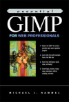
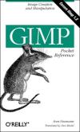
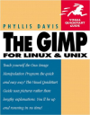
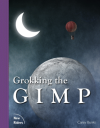
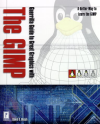
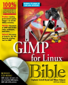
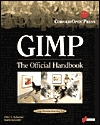
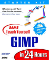
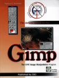

Author: Michael J. Hammel
Format: Paperback, 376pp.
ISBN: 0-130-19114-0
Publisher/Date: Pearson Education/April 2001
Website:
Description:

Author: Sven Neumann
Format: Paperback, 97pp.
ISBN: 1-565-92731-1
Publisher/Date: O'Reilly & Associates, Incorporated/August 2000
Website: http://www.oreilly.com/catalog/gimppr/
Description: The GIMP Pocket Reference explains the
numerous features of the GNU Image Manipulation Program - and is the
essential guide for designers working in a Linux/Unix
environment. This handy reference covers GIMP version 1.2. It
explains the function of every menu item and offers tips for
everyday use. The GIMP Pocket Reference is available in both
English, German, Dutch and French versions.

Author: Phyllis Davies
Format: Paperback, 352pp.
ISBN: 0-201-70253-3
Publisher/Date: Peachpit Press/April 2000
Website:
Description:

Author: Carey Bunks
Format: Paperback, 352pp.
ISBN: 0-735-70924-6
Publisher/Date: Pearson Education/February 2000
Website: http://gimp-savvy.com/BOOK/index.html
Description:

Author: David D. Busch
Format: Paperback, 400pp.
ISBN: 0-761-52407-X
Publisher/Date: Premier Press/January 2000
Website:
Description:

Authors: Stephanie Cottrell Bryant, Tillman Hodgson, Bryan Livingston
Format: Paperback, 728pp.
ISBN: 0-764-53398-3
Publisher/Date: International Data Goup Company/December 1999
Website:
Description:

Authors: Olof S. Kylander, Karin Kylander
Format: Paperback, 895pp.
ISBN: 1-576-10520-2
Publisher/Date: Coriolis Value/November 1999
Website:
Description:
Author: Alex Harford
Format: Paperback, 373pp.
ISBN: 0-735-70911-4
Publisher/Date: Pearson Education/November 1999
Website:
Description:

Authors: Joshua Pruitt, Ramona Pruitt
Format: Paperback, 360pp.
ISBN: 0-672-31509-2
Publisher/Date: Macmillan Computer Publishing/March 1999
Website:
Description:

Author: Michael J. Hammel
Format: Paperback, 340pp.
ISBN: 1-578-31011-3
Publisher/Date: Specialized Systems Consultants, Incorporated/December 1998
Website:
Description: The Artists' Guide to the GIMP covers
all of the basics a new user needs to get started, from detailed
descriptions of Toolbox features to using selections to a complete
explanation of Layers and Channels. Chapters on color functions and
drawing and painting methods show how to make the most of this
wonderful alternative to similar applications for other
platforms. Several examples of plug-ins high resolution, four-color
glossy prints serve as tutorials and inspiration to any reader. Add
to these the extensive discussions on printing and scanning, and the
result is a text that will be an integral part of any graphic
artist's tool chest.